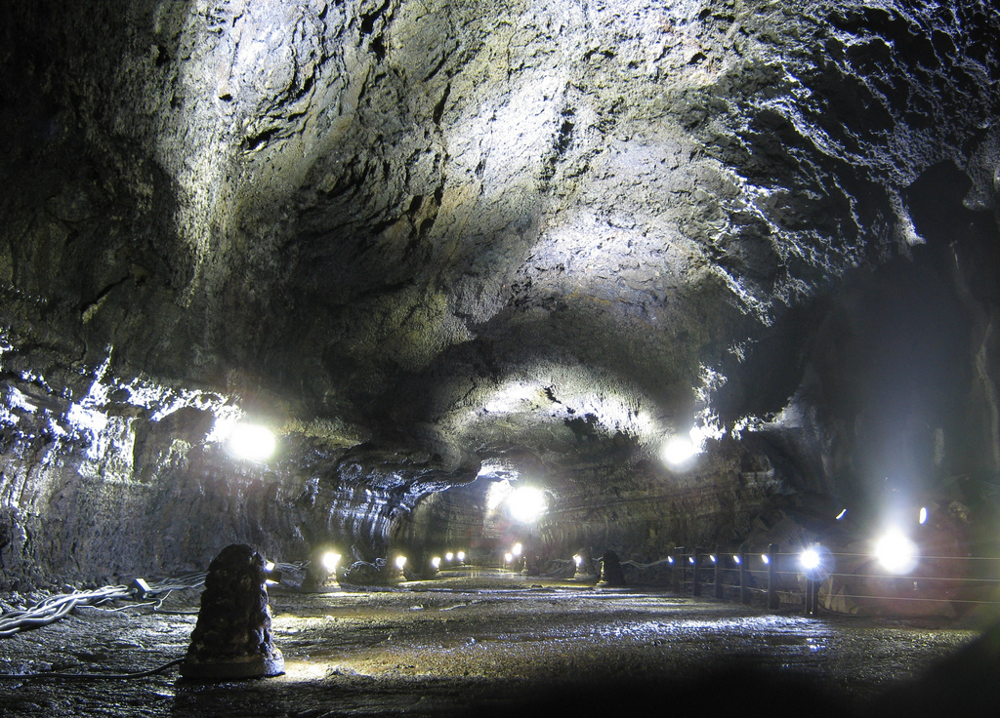

DAY 1
海女・萬丈窟慶生
1/17（日）落地直接往東吃海女現撈的午餐，接著博物館與熔岩洞，傍晚回市區慶生。
09:50
濟州國際機場
入境、取車。國際駕照與台灣駕照正本要一起帶。入境到開上路抓 40 分鐘，10:30 出發往東。
11:00
咸德海邊함덕해수욕장下車伸腿
機場往東 26 分鐘，正好卡在去午餐的路中間。青綠色的淺灣配白沙，停 15 分鐘走一走、拍幾張就走——繞這一下只多 1.7 公里、6 分鐘車程。一月風大就在車上看，不用勉強下去。看照片・地圖 →

11:50
吾照海女之家오조해녀의집
咸德再往東 36 分鐘。位置在城山北邊的吾照里，離等一下的海女博物館 14 分鐘。先吃再去博物館，順序剛好。
07:00–18:00・全年無休｜3.9 分（1,056 則）｜每人 10,000–20,000 韓元
吾照里漁民組合直營，1986 年開到現在，白色燈塔造型的建築。招牌是鮑魚粥 12,000 韓元，另有海螺、海參、章魚。看照片・地圖 →
吾照里漁民組合直營，1986 年開到現在，白色燈塔造型的建築。招牌是鮑魚粥 12,000 韓元，另有海螺、海參、章魚。看照片・地圖 →
13:10
濟州海女博物館海女文化
午餐後往北約 20 分鐘，順路不繞。常設展在一二樓，三樓有特展，紀錄片有中英韓三語，另有實物大的房舍與海女火塘復原（下海前後升火取暖、換衣服的石砌圍牆）、潛水工具與影像資料。慢慢逛約 1–2 小時，停車位充足。這站排得寬，逛不完可以待久一點，反正萬丈窟的入場截止是 17:00，緩衝很足。海女文化 2016 年列入 UNESCO 非物質文化遺產。


左：城山一帶真正上岸的海女／右：博物館建築本身
15:20
萬丈窟만장굴世界自然遺產
海女博物館往西約 25 分鐘，順路不繞。開放的是第二入口往上游約 1 公里，來回一小時，尾端就是全世界最大的熔岩石柱，7.6 公尺高。洞內全年恆溫，一月進去比外面暖，是這天最好的避寒點。

17:20
東門傳統市場
橘子、乾貨、伴手禮先逛一輪，順便消化一下等晚餐。到的時間剛好接上夜市開張。

19:00
豚香氣돈향기慶生晚餐
飯店走路 7 分鐘就到，整條街上評價最好的一家。配濟州橘子燒酒或橘子馬格利。週日晚上先訂位比較穩。
11:00–22:40・全年無休｜4.4 分（614 則）｜每人 20,000–30,000 韓元｜+82 64-724-0228
店員桌邊代烤，客人只要吃；有中文服務。附韓式蒸蛋、泡菜湯、蕎麥冷麵，烤鮑魚評價也好。同一條街備選：Top Bupyeong 4.4 分、大豚 4.0 分。看照片・地圖 →
店員桌邊代烤，客人只要吃；有中文服務。附韓式蒸蛋、泡菜湯、蕎麥冷麵，烤鮑魚評價也好。同一條街備選：Top Bupyeong 4.4 分、大豚 4.0 分。看照片・地圖 →

住宿 濟州島海洋套房酒店・塔洞海邊・第 1 晚
評分8.4／10（1,503 則）
兩晚NT$5,278
停車免費室內停車場
走到黑豬肉街約 7 分鐘
走到東門市場約 12 分鐘
- 四星，房型為海景或市景雙人房，塔洞海邊那側看得到海
- 早餐一人 24,000 韓元、不含在房價裡——兩天早餐都排了外面的解酒湯店，不用加
- 市區停車位緊，室內停車場是選這間最實際的理由